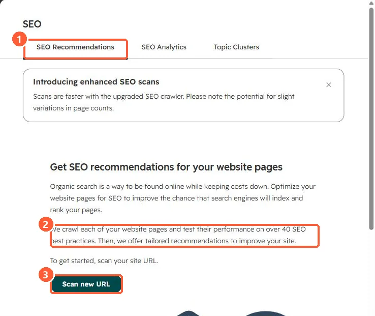

Short answer
In Marketing > SEO, click Scan new URL. In my demo portal the page says HubSpot crawls each page and tests it against over 40 SEO best practices. Recommendations can be reviewed by impact, category and priority, per page or across a domain. External URLs can be validated too. The blog word count check counts the whole post, including title and author.
1. Start a scan
My demo portal has not scanned a site yet.


2. Where to start fixing
- High-impact items on high-traffic pages first.
- Sitewide issues, such as missing meta descriptions in a template, fix many pages at once.
3. Related
Search Console, sitemap settings, and page speed.